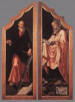
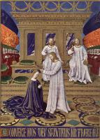
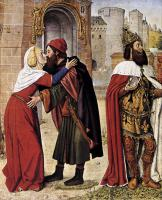
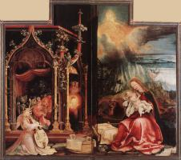
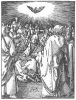
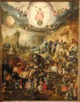
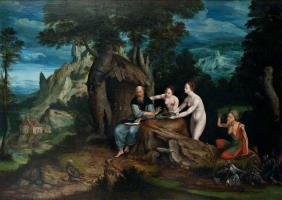

Christian Art: Русский
Старый Завет

Адам и Ева (65)

Давид (12)

Моисей (3)

Пророки (31)
Пророки (31)

Самсон (6)

Соломон (5)

Сотворение мира (7)

Суета (2)

Сюжети Старого Завета (52)
Богородица

Бегство в Египет (30)

Благовещение (56)

Богородица и Дитя (313)

Коронация Богородицы (15)
Коронация Богородицы (15)

Портрет Богородицы (18)

Родители Богородицы (11)
Родители Богородицы (11)

Сцены из жизни Богородицы (29)

Успение (21)
Иисус Христос

Введение в храм (15)

Вознесение (6)

Воскресение (45)

Вход Господний в Иерусалим (3)

Крещение Господне (6)

Оплакивание Христа (74)

Портрет Иисуса (27)

Преображение (4)

Притчи Иисуса (12)

Распятие (92)

Тайная вечеря (11)
Христианство

Ад (10)

Ангелы (28)
Ангелы (28)

Апокалипсис (25)

Бог Отец (4)

Добродетели (27)

Пороки (16)

Пятидесятница (5)
Пятидесятница (5)

Рай (6)

Страшный суд (19)
Страшный суд (19)

Сюжеты Нового Завета (36)

Троица (10)

Церковь (53)
Святые

Апостол Павел (11)

Апостол Петр (11)

Иоанн Креститель (23)

Мария Магдалина (19)

Мученичество святых (54)

Святой Антоний (23)
Святой Антоний (23)

Святой Георгий (18)

Святой Николай (9)

Святой Себастьян (15)

Святой Франциск (49)

Святой Христофор (14)

Святые (174)
Художники
А
Ангел Акотантос (16)
Альбрехт Альтдорфер (24)
Фра Беато Анджелико (145)
Ульрих Апт (2)
Питер Артсен (12)
Б
Ханс Бальдунг (26)
Дирк Баутс cтарший (34)
Жан Бельгамб (4)
Амброзиус Бенсон (16)
Виллем Бенсон (3)
Ян де Бир (6)
Иероним Босх (44)
Ханс Бургкмайр (46)
Дерик Бэгерт (7)
В
Г
Гертген (14)
Маттиас Грюневальд (23)
Вольф Губер (6)
Хуго ван дер Гус (16)
Д
Герард Давид (45)
Жак Даре (4)
Джотто (162)
Дуччо (80)
Альбрехт Дюрер (209)
З
Конрад фон Зост (4)
И
Адриан Изенбрант (14)
К
Робер Кампен (19)
Йос ван Клеве (38)
Михиль Кокси (13)
Колин де Котер (10)
Лукас Кранах Младший (14)
Лукас Кранах Старший (239)
Петрус Кристус (17)
Питер Кук ван Альст (17)
Иоганн Кёрбеке (15)
Л
Лукас ван Лейден (29)
Йос Лиферинкс (8)
Штефан Лохнер (18)
М
Мабюз (60)
Жан Малуэль (4)
Ян Мандейн (11)
Корнелий Массейс (7)
Микеланджело (36)
П
Георг Пенц (8)
Р
Рафаэль (117)
Андрей Рицос (9)
Ф
Никола Фроман (3)
Жан Фуке (23)
Х
Ян ван Хемессен (17)
Мартен ван Хемскерк (25)
Фридрих Херлин (8)
Герард Хоренбот (2)
Ш
Э
Жан Эй (8)
Бартелеми д’Эйк (2)
Хуберт ван Эйк (1)
Ян ван Эйк (40)